This article provides an introduction to the major Indic scripts used on the Indian mainland. Those addressed in this paper include
specifically Bengali, Devanagari, Gujarati, Gurmukhi, Kannada, Malayalam, Oriya, Tamil, and Telugu.
The Indic examples are represented by graphics, to ensure that you see what is expected regardless of any fonts and rendering algorithms that are lacking on your system. Unless you have disabled JavaScript, you can see a list of the characters represented in any graphic by clicking on it. You will also be presented with a text version of the characters in the graphic, which may or may not display correctly depending on whether your system has the right fonts and rendering algorithms. This information will pop up from the bottom right of your browser window. You can try it now by clicking on the following: 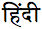
Free fonts can be obtained from the Web for most scripts. For the phonetic transcriptions I recommend downloading the free Doulos SIL font.
Although the Indic scripts are often described as similar there is a large amount of variation at the detailed implementation level. To
provide a detailed account of how each Indic script implements particular features on a letter by letter basis would require too much time and space
for the task at hand. Nevertheless, despite the variations at the detailed level, the basic mechanisms are to a large extent the same, and at the general level
there is a great deal of similarity between these scripts. It is certainly possible to structure a discussion of the relevant features along
the same lines for each of the scripts in the set. It is these common themes that this discussion will attempt to highlight, although we will also point out one or two of the differences along the way.
After some historical and phonetic background, we will tackle the subject in two parts:
-
In the first part I will survey the visual characteristics of these scripts.
-
In the second part I will make brief reference to some of the practical ways those characteristics are supported using
Unicode.
One of the defining aspects of a script is the repertoire of sounds it has to support. Because there is typically a letter for each of
the phonemes in an Indic language, the alphabet tends to be quite large. The table below shows a superset of Indic consonant sounds in a traditional
articulatory arrangement. It is meant to be illustrative rather than exhaustive, so as to give you an idea of the number of sounds most Indic scripts
must support. It does not include all sounds, for example a number of Dravidian alveolar sounds are not shown. The table also provides an
approximate idea of how Unicode character names map to actual sounds, though it has to be stressed that this is only very approximate. The
IPA transcription is shown to the left, followed by the standard Unicode name for that sound. Note the following:
- retroflex variants of a basic sound are found in most Indian languages,
- a plosive sound typically has an aspirated and unaspirated version,
- many languages also recognise one or more combinations as a single unit for sorting or other purposes, eg. kʃ,
- it is common for consonant sounds in particular locations to be held for longer than usual (or in the case of plosives, slightly
delayed) - these geminated consonants are typically shown by writing two consonants together, although the actual visual appearance can
become quite complicated (this is described in more detail later).
| |
Uvular |
Velar |
Palatal |
Retroflex |
Dental |
Labial |
| Plosives |
Voiceless |
Unaspirated |
q |
QA |
k |
KA |
c |
CA |
ʈ |
TTA |
t |
TA |
p |
PA |
| Aspirated |
|
|
kʰ |
KHA |
cʰ |
CHA |
ʈʰ |
TTHA |
tʰ |
THA |
pʰ |
PHA |
| Voiced |
Unaspirated |
|
|
g |
GA |
ɟ |
JA |
ɖ |
DDA |
d |
DA |
b |
BA |
| Aspirated |
|
|
gʰ |
GHA |
ɟʰ |
JHA |
ɖʰ |
DDHA |
dʰ |
DHA |
bʰ |
BHA |
| Nasals |
|
|
ŋ |
NGA |
ɲ |
NYA |
ɳ |
NNA |
n |
NA |
m |
MA |
| Fricatives |
Voiceless |
|
|
x |
KHHA |
ʃ |
SHA |
ʂ |
SSA |
s |
SA |
f |
FA |
| Voiced |
|
|
ɣ |
GHHA |
|
|
|
|
z |
ZA |
|
|
| Flapped & tapped sounds |
|
|
|
|
|
|
ɽ |
DDDHA |
ɾ |
RA |
|
|
|
|
|
|
|
|
ɽʰ |
RHA |
|
|
|
|
| Aspirate, semi-vowels and liquid |
|
|
h |
HA |
j |
YA |
ɭ |
LLA |
l |
LA |
v |
VA |
There are up to 18 Unicode code points dedicated to vowels in each script block, although fewer than this are actually needed on a per
language basis. Nearly always these are simple vowel sounds, although occasionally a symbol may represent a diphthong (especially AI and AU). The
Unicode names for the whole list are:
A, AA, I, II, U, UU, VOCALIC R, VOCALIC L, CANDRA E, SHORT E, E, AI, CANDRA O, SHORT O, O, AU, VOCALIC RR, VOCALIC LL
Indic languages are syllabic in nature, and the inherent vowel is an important concept (see below). Unless otherwise indicated,
each consonant is typically followed by this vowel sound. The inherent vowel can vary in pronunciation from script to script, and examples include
ə, ʌ, and ɔ.
Nasalisation of vowels is also an important phonetic feature that affects the written form of several South Asian languages. The effect
is similar to the nasalisation of words like 'en' in French.
All Indic scripts run left to right, although some combining glyphs appear to the left of their base character for display (see the
discussion of vowel signs below).
In a number of scripts, characters commonly have a headstroke and a high baseline. Such characters typically hang from the line when
written.
These scripts are often called abugidas or alpha-syllabaries.
In this type of script, consonant characters represent a consonant+vowel syllable. The consonant is associated with an inherent
vowel that has to be overridden if it is not the required vowel sound for a particular spoken syllable. For example,
the character 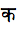 in Hindi (Devanagari script) is pronounced kə rather than
just k. The ə sound is the inherent vowel, and is usually transcribed as 'a'.
Note that the inherent vowel is not always pronounced. For example in Hindi it is not usually pronounced at the end of a word,
although a ghost echo may appear after a word-final cluster of consonants, eg. 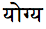 jogjə, or 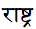 ɾəstɾə. In
addition Hindi has a general rule that when a word has three or more syllables and ends in a vowel other than the inherent a, the penultimate vowel
is not pronounced, eg. 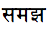 səməɟʰ but
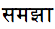 səmɟʰaː, 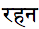 rəhən but 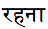 rəhnaː. (For a number of reasons,
however, this rule does not always hold.)
Nonetheless, on the whole, Indic scripts are close to phonemic transcriptions. The pronunciation of consonants is typically quite
regular and predictable, although there is the occasional exception. The following are two examples of exceptions:
Example 1: voiced aspirated plosives and the non-initial letter HA in Gurmukhi are used to indicate tones rather than sounds. For
example a voiced, aspirated plosive in word-initial position represents an unvoiced unaspirated plosive sound with a low tone on the
syllable, eg. 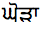 kòɽɑ (The primary use of all voiced aspirated plosives in Gurmukhi is to
express tone information.)
Example 2: in Tamil, consonants such as 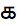 are typically phonemic rather than phonetic. In practise, this
consonant may represent any of kʌ, gʌ, xʌ, ɣʌ, hʌ.
Most scripts supplement a basic set of letters with additional letters used to represent the sounds of other languages, such as
Sanskrit and English. These additional letters are commonly formed by adding a diacritic to an existing letter. This diacritic is called a
nukta in the Unicode Standard, although the name used by speakers of different Indian languages may vary. Some scripts use this diacritic
with several basic letters (eg. Devanagari), others not at all (eg. Kannada).
Examples:
Devanagari, 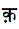 qə (cf.
kə)
Gurmukhi, 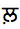 ɭə (cf. 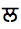 lə)
Oriya, 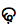 ɽʰ (cf. 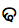 ɖʰ)
It is possible to 'kill' the inherent vowel sound where it would normally be pronounced. This is achieved by attaching a small
diacritic mark, called a virama in the Unicode Standard, to the consonant in question.
Examples:
Gujarati, 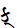 k (cf. 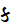 kə)
Tamil, 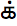 k (cf. kʌ)
Telugu, 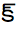 k (cf. kʌ)
In the examples that follow, single consonants pronounced without the inherent vowel are depicted with a virama.
Where a consonant is followed by a vowel other than the inherent vowel, the change is produced by adding a vowel sign (called a matra in Sanskrit) to the
base consonant. A consonant can only support one vowel (and one vowel sign) at a time. A vowel
sign may appear to the left or right, above or below the base consonant, and sometimes surrounds the base consonant on more than one side.
The following illustrates the use of vowel signs with the consonant in Hindi, and
the resultant sounds:
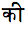 kiː 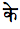 ke 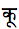 kuː
Vowel signs may also appear to the left of the base consonant they are related to. For example:
Gujarati, + -> 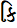 ki
Tamil, + 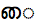 -> 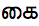 kʌy)
Occasionally a vowel sign may be composed of multiple parts. In some cases such a split vowel sign may have parts on both the left and
right of the base character simultaneously, eg. in Tamil + 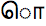 -> 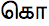
ko. In Kannada there are no vowel signs that surround a base character on both left and right, but there are some that
have multiple parts above and following the base character, eg. 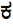 + 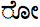 -> 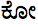 koː. Another alternative is top and bottom, eg. Telugu + 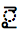 -> 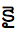 kaj. In some cases, the additional parts can be viewed as
lengthening marks.
Often the pairing of base character and vowel sign produces a change in the basic shape of either base character or vowel sign or
both. Tamil provides many such examples, especially with u and uː. For example, the following
are a selection of the Tamil consonants, each followed by the same vowel sign, 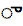 u:
| Without vowel sign |
|
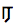 |
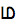 |
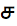 |
|
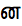 |
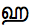 |
| With vowel sign |
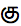 |
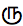 |
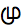 |
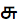 |
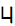 |
 |
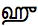 |
Vowels that appear at the beginning of a word or after a preceding vowel with no intervening consonant are typically rendered using
independent vowel letters. The following table illustrates the correspondence between the most common independent vowels and vowel signs in
Telugu:
| Unicode name |
A |
AA |
I |
II |
U |
UU |
vR |
E |
EE |
AI |
O |
OO |
AU |
| Independent vowel |
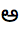 |
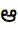 |
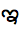 |
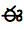 |
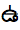 |
|
|
 |
|
|
|
|
|
| Vowel sign |
- |
|
|
|
|
|
|
|
|
|
|
|
|
| Pronunciation |
ʌ |
aː |
i |
iː |
u |
uː |
rɨ/ru |
e |
eː |
aj |
o |
oː |
aw |
Note that there is no vowel sign for the sound associated with the inherent vowel A. Vowel signs are only needed to change
the inherent vowel.
Because a consonant (or consonant cluster) can only support one vowel at a time, note the difference in Devanagari between
kiː and  kəiː. The first example follows the base consonant with a vowel sign; the second, with an
independent vowel. In the second case only, the independent vowel sound is retained immediately after the initial k, and
the sequence is pronounced with two distinct vowel sounds.
kəiː. The first example follows the base consonant with a vowel sign; the second, with an
independent vowel. In the second case only, the independent vowel sound is retained immediately after the initial k, and
the sequence is pronounced with two distinct vowel sounds.
Gurmukhi is unusual in that, with the exception of ə, there are no independent
vowels. Instead there are special 'vowel-bearer' glyphs (of which is one) that are used to support the vowel signs.
is used for ɑ , æ
 , ɔ ,
, ɔ ,
is used for ɪ , i
, e ,
is used for ʊ , u
, o ,
Where consonants appear together without intervening vowels special steps need to be taken to indicate that the inherent vowels have
disappeared. There are many ways in which this is achieved in Indic scripts, and the specifics of how each character behaves are too many to
catalogue here in detail for each script. There are, however, two main approaches: either (a) change the shape of the consonants or merge them
together in some way (a conjunct form), or (b) use a special diacritic to indicate the absence of intervening vowels.
A number of strategies are used to show consonant clusters by merging or changing shapes, and nearly all scripts employ more than one
of these approaches. The following are a few examples:
-
For 60% of Devanagari conjuncts the consonants that lose the vowel typically lose their characteristic vertical bar (which is
historically associated with the sound of the inherent vowel). Such glyphs are referred to as half-forms. For example,
s +  mə -> smə.
mə -> smə.
-
Sometimes the two consonant glyphs may be combined vertically. For example, certain combinations in Gujarati such as ʈ + ʈʰə -> ʈʈʰə. Note that the choice of vertical vs. horizontal combination may be a stylistic preference. For example, the result
of k + kə in Devanagari could be rendered as either a vertical or horizontal combination.
- Clustering may produce a conjunct that does not have easily recognisable parts, such as Bengali
kʃɔ (=
k +
ʃɔ), or that expresses the conjunct by extension of a glyph such as the Malayalam
kːa (=
k +
ka).
-
Another common approach is to reduce and simplify one of the consonants in the cluster, and then attach it to the other like a
diacritic. In Kannada most combinations are formed by reducing non-initial consonant glyphs in a cluster to a simplified form, joined beneath and/or
to the right of the initial consonant, eg. + -> tjʌ. Oriya also often reduces the second consonant, but in some combinations will reduce the first consonant and attach
it to the bottom of the second.
Another approach is to simply show the virama we introduced earlier. This is really the standard approach for modern Tamil, eg.
intʌ (the dot is the virama), but may also be used for any other script if the font being
There is actually a third approach, and that is to simply rely on the user to recognise contexts where the inherent vowel is dropped.
This occurs in some specific situations such as at the end of a word or those examples described earlier. The only script that does this as a
general rule is Gurmukhi. Very few letter combinations are handled as conjuncts in Gurmukhi, most of the time the reader just has to know
where the inherent vowel is not pronounced, eg. utsuk.
A common feature of Indic scripts is the gemination or lengthening of consonants. For example, note the lengthening of the
l sound in
cilːʌhʌʈ (Devanagari). Such consonant lengthening is typically handled just as a normal consonant cluster. Gurmukhi,
again, is somewhat non-standard in that it uses a special diacritic called addak in this situation. To indicate a geminated consonant, the
addak sits above the preceding syllable, eg. putːər.
The letter RA is an example of a letter that typically behaves quite idiosyncratically in consonant clusters, and typically quite
differently depending on whether it appears at the beginning or end of the cluster. Its placement also often involves apparent reordering. This can
be illustrated with the Devanagari RA . When in initial position in the cluster the letter
is typically displayed as a small mark above the right shoulder of the last letter in the
syllable, eg. ʃaːrmaː. This is called a repha. A
in final position in a conjunct cluster is displayed as a small diagonal mark, but precisely where
it appears depends on the shape of the previous consonant, eg. pra,
tra, hra. With TTA and DDA it needs a little supporting line, eg ʈra, ɖra.
Note that a cluster is not limited to two consonants, eg.
r + g + dʰʌ ->
rgdʰʌ
This use of the repha, appearing as it does to the right of the whole cluster, demonstrates the syllabic nature of the Indic scripts.
The following extension of the example shows even more clearly that the repha is actually positioned to the right of the syllable, rather
than just the cluster, since it appears above the vowel sign.
r + g + dʰʌ +
iː -> rgdʰiː
(Note that syllable boundaries in spoken text do not equate to those in written text. For example, 'Hindi' is spoken as 'hin-di', but
written as 'hi-ndi'.)
Where the vowel following a consonant cluster is rendered with a vowel sign, the placement of the vowel sign may need attention. As
with the examples of the repha at the end of the last section, the syllabic nature of the script becomes apparent with the use of reordrant vowel
signs attached to consonant clusters.
In Devanagari, where a vowel sign that is is normally rendered to the left of a character is pronounced immediately after the cluster,
it will be rendered to the left of the whole cluster, eg. in muʃkil, the is pronounced after the .
Vowel signs in a script like Kannada are visually attached to the first consonant in the cluster. Note how the vowel sign appears over
the k in  kri, since the r is rendered
as a reduced appendage at the bottom right of the first consonant in the cluster.
kri, since the r is rendered
as a reduced appendage at the bottom right of the first consonant in the cluster.
There are three diacritics associated with the nasalisation of vowels or the alternative representation of nasal consonants as part of
a consonant cluster. Which diacritic is used for which purpose varies from script to script. The following are a few examples of usage. (As usual,
although these diacritics have their own names in the various languages represented by the scripts, I will refer to them using the generic names
used in the Unicode Standard):
-
In Devanagari, nasalisation of vowel sounds is indicated using the candrabindu or anusvara diacritics, eg.
ʌ̃grez,
nʌhĩː. The anusvara is commonly used in conjunction with a vowel sign that extends above the headstroke.
Nasal consonants in initial place in a conjunct may also be expressed using the anusvara over the previous letter, rather than
as a half-glyph attached to the following consonant. The anusvara is written above the headstroke, at the right-hand end of the preceding character.
In the list below both spellings are correct and equivalent, although the anusvara is preferred in the case of the first two:
= rʌŋg,
= pʌɳɟaːbiː, = hindiː, =  lʌmbaː. Note that the anusvara is still applied when the previous character has its own vowel
sign. If the vowel sign is AA, the anusvara appears over the AA, eg. or
.
lʌmbaː. Note that the anusvara is still applied when the previous character has its own vowel
sign. If the vowel sign is AA, the anusvara appears over the AA, eg. or
.
-
In Kannada the anusvara is mostly used for nasal consonants that are homorganic with a following stop,
eg. ʌŋga. When followed by a consonant other than a stop or when word final, the anusvara is
pronounced m, eg. simha, lʌgaːm.
-
In Oriya, homorganic nasal+stop clusters are usually written with distinctive conjunct letters.
However, the nasal may also be written with anusvara, eg. ɔŋkɔ.
Nasalised vowels use the bindu, eg. ã, kã.
-
Gurmukhi is unusual in that it has its own special diacritic for indicating nasalisation of vowel sounds. The tippi
is used over the preceding syllable with a, ɪ, ʊ and final u, eg. mʊɳɖɑ.
All other vowels use the anusvara (called bimdi in Panjabi), eg.
ʃɑ̃t.
The visarga is commonly required for transcribing Sanskrit, but occasionally has more specific uses too. It is not used at all in
Gurmukhi.
The pronunciation of the visarga may vary. In Kannada it is commonly pronounced ha, eg. punəha. In Gujarati it is typically silent.
In Tamil the visarga is known as 'aytham' and is used to create additional fricative sounds. Before PA it creates f, and before JA it creates z, eg. fiːsɯ,
ziɾoks.
Glyphs for the visarga should not have a dotted circle before
them. This is feature of some older fonts, inherited from the fact that incorrect semantics were applied to this Unicode character prior to Unicode version
3.2.
Sub-sentence units (words) are separated with spaces.
Modern text commonly uses western punctuation, but some scripts sometimes use traditional punctuation. For example, the DANDA
may still be used in Devanagari to mark the end of a sentence, or the DOUBLE DANDA
in Telugu for certain abbreviations.
In this section we need to make a clear distinction between characters, the basic codepoint units provided by the Unicode
Standard for representation of the script in memory, and glyphs, the visual representation of one or more underlying characters when
displayed or printed. As with other complex scripts, and unlike text in English, it is common to find situations where there is not a one-to-one
mapping of characters to glyphs.
I will try to use the terms character and glyph carefully in the following text to clarify whether we are talking about the
representation of the text in memory or as rendered on-screen or in print.
The characters in an Indic Unicode script block are a superset of the ISCII (Indian Standard Code for Information Interchange)
character sets. The ISCII standard includes separate encodings for each of the scripts discussed here, using escape sequences to shift between them.
The Unicode blocks were originally based on the 1988 version of ISCII encodings. ISCII published a new version of the standard in 1991 with a few
changes to order and repertoire of characters. Unicode, nevertheless, remains a superset of all the ISCII codes, with the exception of a few Vedic
extension characters.
When first encoded in Unicode, the first 85 characters in each Unicode block were placed in the same order and position, on a script by script basis, as the 1988 ISCII
characters for the respective script. Every script block orders analogous characters in the ISCII range in the same relative locations to the start
of the block across all 9 scripts under consideration in this paper. The next 27 characters are additional Unicode characters, where each analogous
character across the scripts is also assigned to the same code point relative to the beginning of the block. The final column is reserved for script
specific characters. There is no special ordering here.
In the following charts I will use colour coding to indicate the different ranges as follows:
| ISCII-derived |
coordinated Unicode extension |
additional script specific characters |
The zones described above are illustrated here using the Devanagari script block.
The fact that ISCII and Unicode attempt to use the same code point relative to the start of the code block for analogous characters
across all nine Indic scripts theoretically allows for easy transliteration between the various scripts, however in practice there are quite a few
exceptions in transliteration, so specific tables have to be developed anyway.
Each script block has a different number and distribution of characters. The following table
contrasts the allocation of characters for Devanagari, Bengali and Tamil.
Other notes:
-
In older fonts the Tamil visarga, or aytham, was in some cases incorrectly rendered with a dotted circle before it in word-initial position (eg. in a word like ). This is because the Unicode Standard initially classified the Tamil visarga as a combining character.
An erratum issued in September 2001 corrected this, changing the General Category from "Mc" (Mark, combining) to "Lo" (Letter, other).
-
The Kannada character U+0CDE KANNADA LETTER FA was incorrectly named. A more appropriate name would be
LLLA, rather than FA. Because of the rules for Unicode naming, the current name cannot, however, be changed. Fortunately this letter has not been
actively used in Kannada since the end of the 10th century.
It is important to correctly order Indic characters in memory where combining characters are involved. The Unicode Standard requires
that all combining characters be stored in memory after the base character they are combined with. This is a fundamentally important concept. It
means that, even if a combining glyph appears to the left of its base character, it is stored after the base character in memory. (This is
often referred to as logical ordering.)
For example, the characters in the word hindiː are
stored in memory as:
h +
i + n + d + iː
Lets see a slightly more complicated example from Kannada. The visual sequence is pronounced kri; the RA is rendered as a subscript to the bottom right and the vowel is rendered
as a diacritic above the symbol for KA. The order of characters in memory (ignoring the virama, which is introduced in the next section) is:
k + r +  i
i
It is common that multiple combining characters are asssociated with a single base character. Examples of such combinations from
Devanagari include an anusvara with a vowel sign, eg. hindiː, or a
visarga with a vowel sign, eg. duhkʰ. Where there are multiple
combining characters, the Unicode Standard provides rules about relative ordering in memory that should be observed. If there is a nukta it must
immediately follow the base character. Next comes any virama or any vowel sign, then any bindus. Observing these rules improves operability and
simplifies operations such as searching, sorting, character indexing, and the like.
The treatment of combining characters in Indic scripts also necessitates the use of context-based rules in the font to ensure the
correct positioning and behaviour of displayed glyphs (a glyph being the visual representation of an underlying character). The position of
a glyph for a combining character will commonly vary according to the shape and position of its base character, and any other combining characters
associated with that base. In a number of cases, the combination of base character and combining character produces a fused shape that must be
rendered by use of a ligature glyph or other special context-sensitive glyph forms (see also the next section for use of the virama).
Note also that reordering is not limited to displaying certain vowel signs to the left of the immediately preceding base consonant. In
a consonant cluster a vowel sign that appears to the left may need to be displayed to the left of the whole consonant cluster, not just the preceding
character. Similarly, the symbol for the consonant RA may be rendered as a diacritic at the far right of a syllable involving a consonant cluster
that it logically begins.
In addition, because the base character is typed first during normal keyboarding, the base character will typically need to be 'moved'
slightly to the right to accommodate the combining character glyph that joins to the left. In practice, the entire word is redrawn with every Indic
letter. This is typically done in an off-screen buffer and blitted to the screen. The effect is that characters appear to move and change shape
considerably while one is typing.
As mentioned earlier, a number of scripts (Bengali, Oriya, Tamil, Telugu, Kannada, Malayalam) have vowel signs that are composed,
visually, of more than one part. Such multi-part vowel signs can normally be represented using a single character. For example, Tamil
kʌʋ can be represented using the characters and . Kannada koː can be composed of the characters and . The Unicode charts typically do also provide separate characters that can be used to represent multi-part vowel signs.
If these parts are not already available as simple vowel sign characters, they are provided as special 'length mark' characters such as and . Note also that if two characters are used to represent a split vowel sign both combining
characters must follow the base character in memory (eg. + +
for the Tamil example above).
Although Unicode typically provides single characters for letters formed by the addition of a nukta (eg.
, , and ), these almost all have canonical
decompositions to base character plus nukta diacritic.
Since there are alternative ways of representing multi-part vowel signs and consonants created using the nukta, the question arises,
"Which approach should be used when entering Indic text?" The W3C recommends the use of NFC (Unicode Normalization Form C) for web content. NFC
represents all multi-part vowels as single characters, but all combinations of consonant plus nukta as two separate characters (apart from the
following exceptions in Devanagari: RRA, LLLA,
and NNNA).
It was mentioned above that Gurmukhi is somewhat unusual in that vowel signs are carried by special 'vowel bearer' letters to create
independent vowels. While Unicode does provide character codes for these vowel bearers, and
(plus, of course, ), their use isn't recommended. Instead Unicode provides precomposed characters for all the independent
vowel sounds needed, eg. , , , etc.
Note however that, for the general case, whereas some other encoding systems for Indic represent an II SIGN, for example, by VIRAMA +
VOWEL II, Unicode does not do that. It considers these two sequences to not be equivalent, and not have the same rendering.
Unicode follows the rule of 'encode characters not glyphs'. This is a fundamentally important concept relating to the support of Indic
scripts in Unicode. Even though there are many potential shapes for a character when displayed (half-form, conjunct, ligature, diacritic, etc.), the
rule means that there is only one codepoint to represent that character. This is a major advantage for conducting operations on the text such as
string comparison, collation, etc. It also allows for a much simpler keyboard, and simpler correspondence between the keyboard input and the stored
text. The task of producing the right shape for printing or display of a character according to its context falls to the rendering algorithms of the
font, application or system.
We have already mentioned that combining character glyphs may sometimes adopt different shapes or merge with and alter the shape of
the base consonant. Another key area where intelligent glyph shaping is required is the display of consonant clusters.
Consonant clusters are invariably indicated in a sequence of Unicode characters by the presence of a VIRAMA character, whether or not
the glyph for the virama will be visible on display. Thus the virama is the trigger for any complex glyph shaping that may be applied to a conjunct
by the font or rendering algorithms.
The outcome of a consonant+virama+consonant sequence will vary according to the characters, scripts, and fonts involved. Some
possibilities are:
-
the initial consonant is rendered as a 'half-form' alternative glyph and no virama is shown, eg.
+ + =
-
the two consonants and virama are represented by a single glyph (a ligature), eg. + + =
(or
+ + = in some fonts)
-
one of the consonants is represented as a combining diacritic (that may or may not be spacing), eg. + + -> .
Note that in some cases the diacritic may appear in a very different position visually than
the position of the character it represents in the text stream. For instance, we have already seen the example of the repha in
rgdʰiː. Even though the RA appears visually at the top right of the
cluster, the sequence of characters underlying the cluster is:
r + + g + + dʰʌ + iː
-
the virama may simply be displayed as a combining glyph. In some scripts (eg. Tamil) this is very much the norm, eg.
+ + = . In other scripts (such as
Devanagari) this is an optional scenario that depends on the preference of the user or the richness of the font - a font that has few ligatures and
special glyph forms will resort to simply displaying the virama instead.
In Unicode it should be possible to force a consonant + virama sequence to display the virama (rather than convert the consonant to a
half-form or ligature) by adding a ZERO WIDTH NON-JOINER character (U+200C) immediately after the virama of the dead consonant. For example, this
produces rather than .
To force a dead consonant to assume a half-form rather than combine as part of a ligature, place a ZERO WIDTH JOINER character
(U+200D) immediately after the virama. For example, this produces rather than
. The zero width joiner can also be used to produce an example of a half-form on its own for
illustration purposes, eg. . You can also create half-forms of combining ligatures, eg.
.
Where scripts use glyphs that hang from the baseline, rather than sitting on the baseline, it is important to ensure that any glyphs
from another intermixed script (eg. Latin script letters) are correctly aligned with the Indic script. It is also important to ensure that the glyphs
are aligned as expected with other elements, such as table cells, graphic elements, and the like. For a detailed treatment of the issues for
alignment of such scripts with other fonts see Steve Zilles' talk, 'Internationalized Text Formatting in CSS and XML' in the proceedings of
IUC22.
There are other practical considerations related to enabling Indic script input and display. Keyboards must, of course, provide access
to all needed characters, but consider standardisation of layout. On-screen display must support adequate resolution and line height, as well as
proportional spacing.
For information about collation of Indic scripts, see Unicode Technical Note #1.